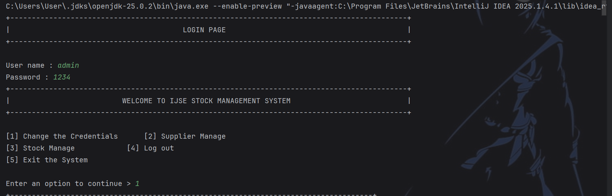
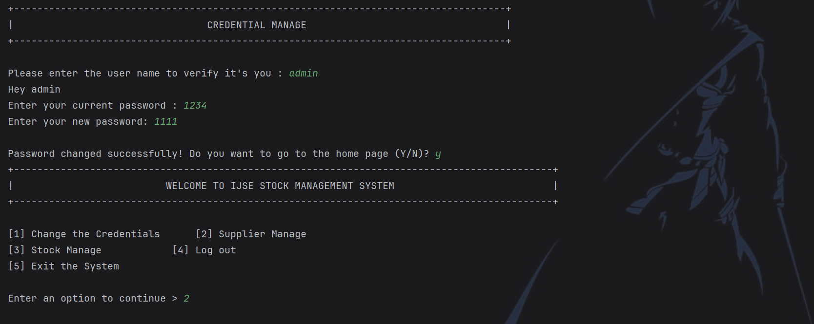
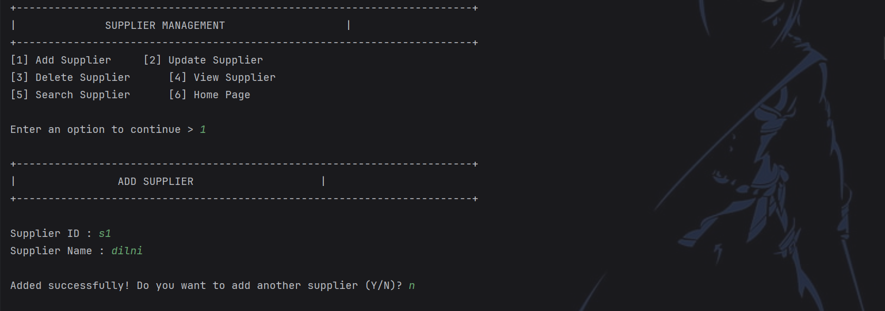
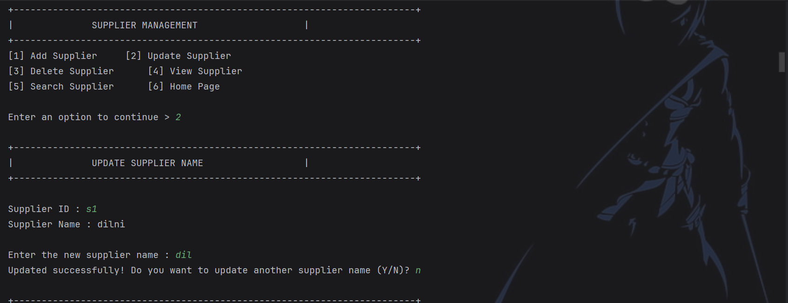
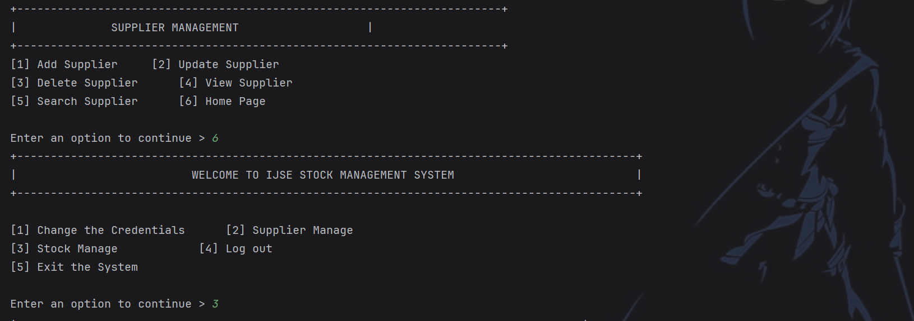
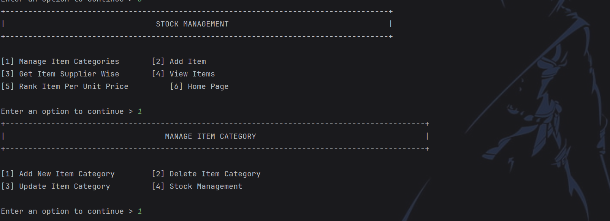
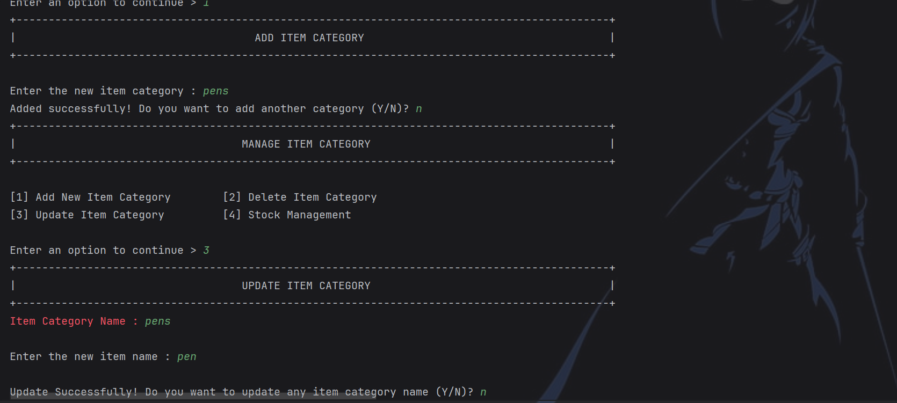
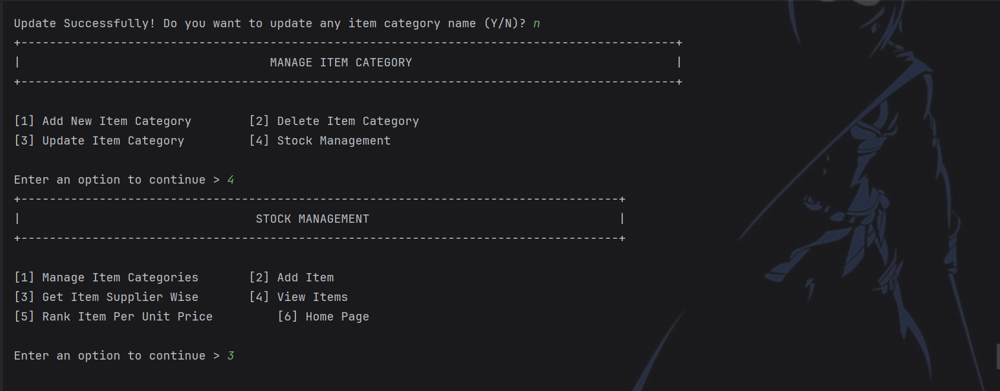
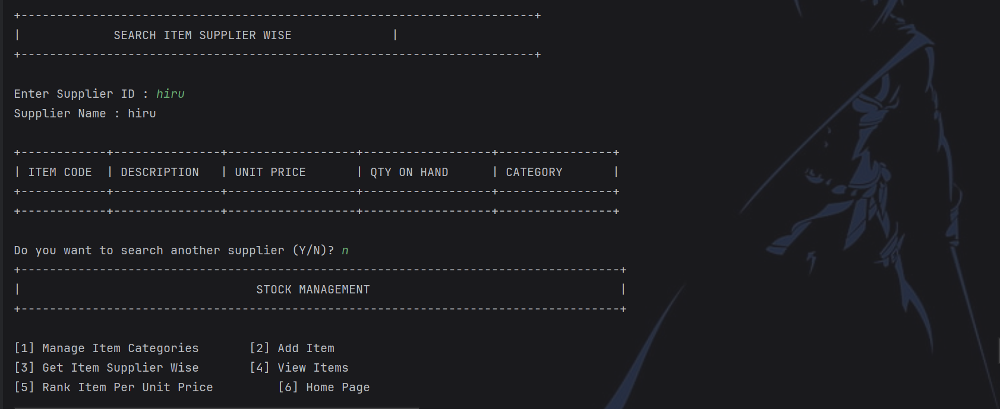
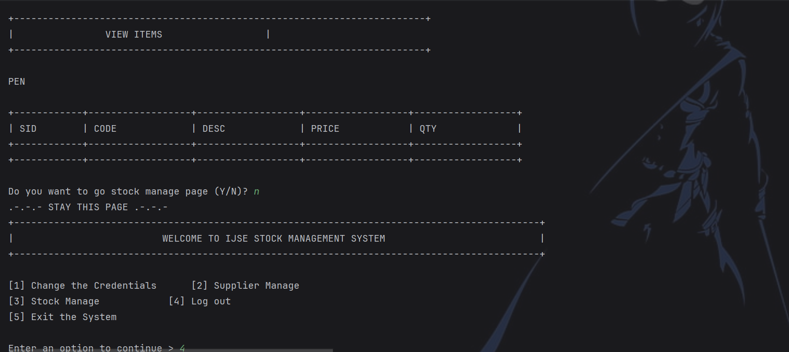

NO 9/36 Sagara Mawatha, panadura | dihinisehanga29@gmail.com | 0743602426










Objective: This is an introductory Java application designed to establish the fundamental structure of a software project.
Target Audience: It serves as a foundational project for students, such as those in the HDSE or DEP programs at IJSE, to practice core Java concepts.
Module Configuration: The 1st project.iml file defines this as a JAVA_MODULE for the IDE.
Resource Management: Configured to exclude output folders via NewModuleRootManager for a clean structure.
Execution Entry: Application logic begins execution from the Main class.
1. Open folder in IntelliJ IDEA to detect .iml.
2. Set Project SDK in IDE settings.
3. Right-click Main and select "Run 'Main.main()'".
Initial Skeleton: Acts as a "Starter" or "Boilerplate" providing metadata for complex logic.
Modular Approach: Prepared for future expansion into multi-module systems using $MODULE_DIR$.